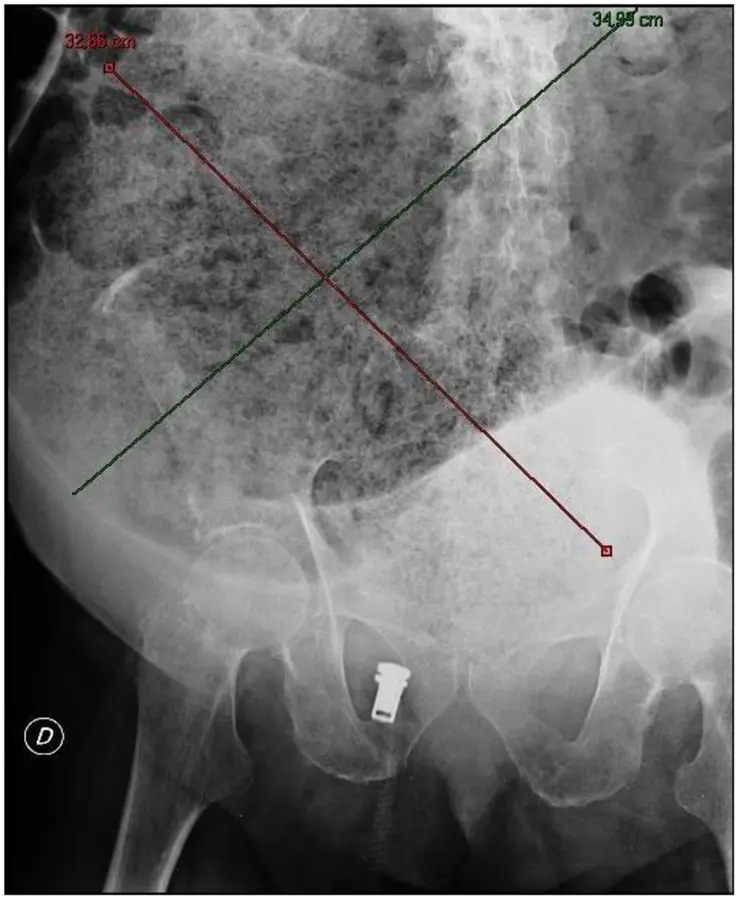

Constipation chronique
Protocole du cabinet de médecine de famille, en Suisse · dix diagnostics en concurrence
Dix diagnostics en concurrence
Les trois premières parts viennent d’une série américaine de patients déjà adressés, que l’avis suisse reprend pour classer les mécanismes fonctionnels[5]. Elles ne décrivent donc pas la population générale, et les causes secondaires comme les urgences n’y reçoivent aucune part isolée[5]. Pour ces sept diagnostics, la place se lit au rang E, c’est-à-dire à la gravité, et non à un pourcentage[25].
- DX.1 — Constipation de transit normal68 % C’est le mécanisme le plus fréquent de la série adressée, puisque la scintigraphie n’y montre aucun ralentissement[5].rang E : aucun
- DX.2 — Dyssynergie défécatoire28 % Les critères de défécation dyssynergique sont remplis chez 28 % des mêmes patients, au deuxième rang de fréquence[5].rang E : aucun
- DX.3 — Transit colique lent4 % Seuls 4 % ont un transit lent prouvé à la scintigraphie, si bien que ce diagnostic reste rare[5].rang E : aucun
- DX.4 — Constipation médicamenteuseOpioïdes, anticholinergiques, anticalciques et sels de fer sont les classes à relire en premier, sans part isolée publiée dans la série[30].rang E : aucun
- DX.5 — Syndrome de l’intestin irritable à constipationCe syndrome n’a aucune part isolée dans la série, qui ne classe que la constipation fonctionnelle[5]. Sa place dans la liste reste donc hors de tout rang de fréquence.rang E : aucun
- DX.6 — Constipation d’origine métaboliqueHypercalcémie, hypothyroïdie et hypokaliémie figurent parmi les causes métaboliques à séparer, chacune avec son dosage et son traitement[31]. Le diabète s’ajoute à cette liste, et aucune part isolée ne lui est attribuée[30].rang E : aucun
- DX.7 — Trouble structurel de l’évacuationIntussusception, rectocèle, prolapsus rectal et descente périnéale se prouvent à l’imagerie, sans part isolée publiée[24].rang E : aucun
- DX.8 — Cancer colorectalAucune part isolée n’est publiée ; la coloscopie précède pourtant toute chirurgie de constipation, afin d’exclure une néoplasie[23].🚩 E3
- DX.9 — FécalomeAucune part isolée n’est chiffrée ; la masse se reconnaît au toucher et au cliché, puis la dose de coprostase attend l’exclusion de l’obstacle[26].🚩 E2
- DX.10 — Occlusion intestinale mécaniqueAucune part isolée n’est chiffrée ; l’obstruction, la perforation et l’iléus contre-indiquent tout macrogol, ce qui place ce diagnostic en tête de l’arbre[26].🚩 E1
1. Définition et sémantique
L’exonération devient une constipation lorsqu’elle est difficile, insatisfaisante ou trop rare, car l’avis suisse retient exactement ces trois caractères[1]. Cette formulation rejoint le consensus de Rome IV publié en 2016, donc on ne lui substitue pas une définition de couloir[1].
Dans cet avis, constipation est le nom de la forme chronique, sauf précision contraire[1]. La forme fonctionnelle y désigne une constipation non obstructive, ce qui laisse le transit normal ou lent[1].
On n’emploie pas le tour de constipation banale pour clore l’entretien, car une occlusion, un fécalome ou une lésion néoplasique imitent le même inconfort[25]. Le synonyme utile reste constipation chronique, et l’étiquette fonctionnelle n’est légitime qu’après l’obstacle écarté[1].
La Société suisse de gastroentérologie retient cette définition au grade A, afin qu’elle serve dès le premier recours[1]. On range le symptôme avant le mécanisme, car le mécanisme ne se classe qu’ensuite[5].
Une selle quotidienne n’innocente pas le patient lorsque l’exonération reste difficile[1]. À l’inverse, une selle rare mais facile peut n’être qu’un espacement, ce qui oblige à faire détailler les trois mots[1].
Difficile qualifie l’effort, insatisfaisante qualifie le résultat, rare qualifie le rythme, et les trois restent distincts[1]. Un seul de ces caractères suffit à ouvrir le dossier, car la définition est disjonctive[1].
Appeler cela une paresse du patient rate la définition, puisque le grief porte sur l’exonération[1]. Le côlon lent et le trouble de sortie habitent le même mot, donc le mot ne choisit pas le traitement[5].
La forme fonctionnelle exclut l’obstacle, et elle admet un transit normal aussi bien qu’un transit lent[1]. Tant que l’obstacle n’est pas écarté, l’étiquette fonctionnelle reste prématurée[1].
On ne confond pas le nom chronique avec une étiquette bénigne, car la définition décrit la selle, tandis que la gravité se décide à part, sur l’obstacle ou la lésion[1].
2. Épidémiologie (Suisse, puis Europe)
La prévalence groupée atteint 14 % dans la population générale, avec un intervalle de 12 % à 17 %, et elle monte avec l’âge[2]. Jusqu’à un adulte sur sept est concerné, surtout les femmes et les adultes âgés, ce qui pèse sur le premier recours[2].
Le même avis retient au grade A la prédominance féminine[2]. En outre, après 75 ans, une base de médecine générale britannique rapporte un odds ratio de 1,96, dont l’intervalle va de 1,71 à 2,24[2].
Avant 49 ans, le transit féminin dure 64,0 heures contre 59,5 heures plus tard[2]. L’écart est de 4,6 heures, et son intervalle va de 1,1 à 8,1, donc la différence des sexes se réduit après la ménopause[2].
La série qui classe les mécanismes est américaine : 1 411 dossiers relus par un seul gastroentérologue d’un centre tertiaire, la Mayo Clinic, sur 16 ans[32]. Parmi ces patients adressés, 68 % ont un transit normal, 28 % une dyssynergie et 4 % un transit lent, ce qui ne décrit pas le premier recours[5].
Ces trois parts classent des patients explorés, donc elles ne décrivent pas la population générale[5]. On s’en sert pour ordonner les mécanismes fonctionnels, tandis que les causes secondaires restent sans pourcentage propre[5].
Le quintile social le plus favorisé montre le taux le plus bas, soit 2,81 chez les hommes et 8,53 chez les femmes[4]. Les niveaux social, économique et éducatif bas s’associent à davantage de constipation, en partie parce que fibres, fruits et légumes y manquent[4].
La qualité de vie baisse, et l’avis cote cette association au grade A[2]. Le vieillissement et la polymédication font prévoir une charge plus lourde, car la prévalence suit l’âge[2].
Une histoire familiale est liée à un début plus jeune et à une durée plus longue[3]. Dans la même histoire, hémorroïdes, fissures, prolapsus et manœuvres digitales sont plus fréquents, sans qu’une mutation précise soit retenue[3].
| Chiffre | Population | Lecture | Usage |
|---|---|---|---|
| Prévalence groupée 14 % | Population générale | Intervalle 12 à 17 % | Le chiffre décrit le motif de consultation |
| Odds ratio 1,96 | Après 75 ans | Intervalle 1,71 à 2,24 | L’âge augmente le risque |
| Transit 64,0 heures | Femmes avant 49 ans | Écart 4,6 heures | L’écart se réduit après la ménopause |
| Parts 68, 28 et 4 % | Série américaine de 1 411 dossiers | Années 1994 à 2011 | Ces parts ne décrivent pas la population générale |
3. Physiopathologie
Les causes primaires se rangent en trois catégories, soit le trouble de l’évacuation, le transit colique normal et le transit colique lent[5]. Les causes secondaires viennent d’une autre maladie, d’un médicament ou d’une anomalie anatomique, ce qui change l’examen[5].
Au moins la moitié des constipations fonctionnelles n’ont pas de transit retardé, une fois le trouble défécatoire écarté[5]. Étiqueter d’emblée un côlon lent rate donc souvent la cible, car le mécanisme distal domine la série[5].
L’hyposensibilité rectale touche 27 % des constipations fonctionnelles contre 4 % des syndromes de l’intestin irritable à constipation[7]. Dès lors, les seuils de douleur des volontaires sains vont de 18 mmHg à 42 mmHg[7].
L’hypersensibilité concerne 30 % des syndromes irritables et aucun patient du groupe fonctionnel dans ce travail[7]. Donc, une autre série montre 23 % d’hyposensibilité chez les patients constipés, et 27 % lorsqu’une incontinence s’y ajoute[7].
Cette hyposensibilité atteint 10 % dans l’incontinence isolée[7]. Elle n’est plus que de 5 % lorsque ni constipation ni incontinence ne motivent l’examen, ce qui situe le seuil[7].
Les selles normales contiennent environ 74 % d’eau[11]. Les selles molles dépassent 76 % et les selles dures restent sous 72 %, donc la consistance se lit comme une teneur en eau[11].
Sans un substrat qui retient l’eau dans la lumière, le surplus bu est absorbé[11]. Les fibres solubles lient cette eau, augmentent le volume et accélèrent le transit, ce qui explique l’avantage du psyllium[13].
Une part de ces fibres fermente, et les produits de cette fermentation accélèrent encore le passage[13]. Le polyéthylène glycol agit ensuite par effet osmotique, lorsque les fibres échouent ou sont mal supportées[15].
Le bisacodyl et le picosulfate de sodium stimulent sécrétion et contractions propagées[18]. On les garde pour le secours, car l’avis n’en fait pas le fond du traitement[18].
Dans le transit lent opéré, le volume des cellules interstitielles de Cajal baisse dans le sigmoïde[8]. Les structures nerveuses de la musculeuse circulaire baissent aussi, or ces pièces viennent de patients très sélectionnés[8].
Ces coupes n’expliquent donc pas la constipation ordinaire du cabinet[8]. Un an après un biofeedback, seuls 20 % des transits lents gardent un bénéfice, contre 50 % des dyssynergies du plancher[6].
Le même exercice ne traite pas les deux pannes, de sorte que le mécanisme commande le choix[6]. La chaîne va ainsi de l’eau non retenue à la selle dure, puis de la selle dure au mauvais traitement[11].
| Perturbation → mécanisme | Exploration | Conduite |
|---|---|---|
| Transit normal fréquent | Scintigraphie facultative | Mesures de vie d’abord |
| Dyssynergie de sortie | Tests anorectaux | Biofeedback si expertise |
| Transit lent minoritaire | Après exclusion distale | Osmotique avant chirurgie |
| Eau libre absorbée | Selle sous 72 % d’eau | Fibre soluble, pas eau seule |
| Cause externe au côlon | Médicaments et métabolisme | Corriger la cause |
Une selle se lit d’abord comme une teneur en eau, comme le montre l’échelle de Bristol, en trois consistances, sous [11].
Eau et consistance de la selle
La fibre retient l’eau dans la selle, le macrogol l’attire par effet osmotique, et le stimulant pousse une selle déjà formée, donc on ne les empile pas[15].
Les cellules de Cajal, l’hyposensibilité rectale et la contraction paradoxale décrivent des mécanismes distincts, donc un seul laxatif ne les couvre pas, et le choix du geste suit le mécanisme retenu[8].
4. Démarche diagnostique
On ouvre par l’occlusion intestinale mécanique, rang E1, avant tout raisonnement de fréquence[25]. Movicol est alors contre-indiqué, puisque l’obstruction, la perforation et l’iléus figurent sur l’information professionnelle[26].
Le fécalome, ou coprostase, vient au rang E2[26]. La masse distend le côlon sans aligner les mêmes niveaux, ce qui sépare les deux clichés[26].
Le cancer colorectal reste le rang E3[23]. Il tue moins vite, mais l’avis interdit toute chirurgie de constipation sans avoir exclu une néoplasie[23].
Après ces trois rangs, on revient au transit normal, puis à la dyssynergie, puis au transit lent[5]. Un médicament, un intestin irritable, une maladie métabolique et un trouble structurel gardent leur place, sans part chiffrée[5].
Appeler transit lent une dyssynergie coûte cher, car le biofeedback n’aide guère le transit lent isolé[6]. Le magnésium donné malgré un rein fragile est l’autre piège, alors que l’avis n’a pas d’essai solide[17].
| Diagnostic | Ce qui tranche | Piège | Conduite |
|---|---|---|---|
| Occlusion E1 | Niveaux au cliché debout | Donner un macrogol | On ne donne aucun laxatif et on adresse aux urgences |
| Fécalome E2 | Masse mouchetée | Dose de coprostase trop tôt | On écarte d’abord l’obstacle |
| Cancer E3 | Endoscopie si alarme | Chirurgie sans coloscopie | On exclut la tumeur |
| Dyssynergie | Effort et manométrie | Étiquette de côlon lent | Le biofeedback passe en premier |
| Diagnostic | Signe clé | Examen qui tranche | Mécanisme | Conduite immédiate | Rang |
|---|---|---|---|---|---|
| DX.1 Constipation de transit normal | Selle difficile, vitesse conservée | Scintigraphie non exigée | Pas de ralentissement | Mesures de vie d’abord | Pas un rang E |
| DX.2 Dyssynergie défécatoire | Effort long, digitation | Manométrie et défécographie | Sortie paradoxale | Biofeedback si expertise | Pas un rang E |
| DX.3 Transit colique lent | Selles rares, sortie facile | Scintigraphie après exclusion | Côlon réellement lent | Osmotique, chirurgie tardive | Pas un rang E |
| DX.4 Constipation médicamenteuse | Opioïde, anticholinergique, anticalcique ou fer | Revue des traitements | Frein extérieur | Corriger avant d’ajouter | Pas un rang E |
| DX.5 Syndrome de l’intestin irritable à constipation | Douleur liée aux selles | Clinique, pas la scintigraphie | Hors de la série de transit | Fibres, puis sécrétagogue | Pas un rang E |
| DX.6 Constipation d’origine métabolique | Hypercalcémie, hypokaliémie, hypothyroïdie, diabète | Calcémie, kaliémie, thyréostimuline, glycémie | Quatre maladies distinctes | Traiter chacune à part | Pas un rang E |
| DX.7 Trouble structurel de l’évacuation | Prolapsus, rectocèle, intussusception | Imagerie du pelvis | Obstacle anatomique distal | Conservateur, puis chirurgie | Pas un rang E |
| DX.8 Cancer colorectal | Alarme sur l’algorithme | Coloscopie avant opération | Lésion néoplasique | Exclure avant de réséquer | Rang E3 |
| DX.9 Fécalome | Masse fécale au toucher | Cliché sans niveaux multiples | Coprostase | Écarter la perforation | Rang E2 |
| DX.10 Occlusion intestinale mécanique | Arrêt des gaz, vomissements | Cliché debout, niveaux | Anse fermée | Aucun macrogol | Rang E1 |
Aucune résection ne se discute sans coloscopie, défécographie et manométrie anorectale réalisées dans un centre hautement spécialisé[23].
On élimine d’abord ce qui ferme l’intestin, on traite ensuite ce qui est fréquent, et on n’inverse pas cet ordre parce qu’une constipation paraît familière au premier contact[25].
La démarche reste la même au cabinet et aux urgences, sauf que l’urgence impose le cliché, tandis que le cabinet commence par l’entretien et par les mesures de vie[9].
5. Anamnèse ciblée et drapeaux rouges
On demande si l’exonération est difficile, insatisfaisante ou rare, car ces trois mots sont la définition[1]. On date le début et les manœuvres digitales, puisque la dyssynergie se lit dans cette chronologie[3].
Chaque médicament est revu avant d’ajouter un laxatif, car l’algorithme suisse place cette revue au début[25]. Les opioïdes appellent une stratégie propre lorsque l’antalgique ne peut pas être arrêté[20].
On sépare fibres, boisson et exercice, car leurs preuves ne se valent pas[10]. L’eau seule ne corrige pas un adulte déjà hydraté, tandis que la fibre sans eau rate l’effet attendu[11].
Chez une femme, on demande les accouchements et la chirurgie du pelvis[2]. Alors, une histoire familiale fait chercher hémorroïdes, fissure, prolapsus et digitation[3].
Les symptômes d’alarme et les médicaments précèdent les fibres dans l’algorithme[25]. L’avis ne dresse pas ici une liste chiffrée d’alarmes, donc l’action liée au mot alarme reste l’endoscopie prévue sur le chemin[25].
Un arrêt des gaz avec des vomissements fait évoquer l’occlusion : on suspend tout macrogol, et le cliché d’abdomen debout cherche les niveaux[26]. Une masse au toucher évoque la coprostase, mais la dose de coprostase n’est licite que si l’obstruction et la perforation sont écartées[26].
| Drapeau | Signification | Action |
|---|---|---|
| Alarme nommée par l’algorithme | Forme fonctionnelle prématurée | Endoscopie sur le chemin |
| Médicament constipant | Cause secondaire | Revoir l’ordonnance |
| Arrêt des gaz et vomissements | Occlusion possible | Pas de macrogol |
| Masse au toucher | Coprostase | Écarter l’obstacle d’abord |
| Rein fragile | Magnésium dangereux | Ne pas proposer ce sel |
| Échec des mesures de vie | Test enfin licite | Pas de bilan avant l’essai |
Quatre réponses d’une orientent déjà le mécanisme sans aucun examen[6].
Anamnèse utile
L’entretien utile demande la consistance, l’effort, la digitation et la date d’un nouveau médicament, car ces quatre réponses orientent déjà vers la sortie, le transit ou l’ordonnance sans aucun examen[6].
Un drapeau rouge n’est pas une liste à cocher de mémoire, puisque l’algorithme le nomme sans détail, et l’action retenue est l’endoscopie prévue sur ce chemin[25].
6. Examen physique ciblé, région par région
On regarde d’abord la bouche et les muqueuses, car une sécheresse visible est le seul contexte où l’eau supplémentaire a une place[11]. Une bouche humide ferme cette piste, puisque le patient déjà hydraté ne gagne rien à boire davantage[11].
On palpe ensuite le cou lorsque l’on cherche une maladie métabolique[5]. L’avis ne fixe aucun seuil chiffré de thyréostimuline ni de calcémie, et l’anomalie se traite comme une cause[5].
L’abdomen se palpe et se percute avant tout laxatif osmotique[26]. Ainsi, un météorisme douloureux change la conduite, et une cicatrice fait chercher une bride[5].
Le pelvis et l’anus ferment l’examen[24]. Ensuite, le toucher recherche le fécalome, le tonus, une fissure, un prolapsus ou une rectocèle, et l’imagerie doit prouver le trouble avant une opération[24].
La technique demande une explication, un gant et une lenteur qui distingue la douleur d’une fissure de la simple gêne[3]. Enfin, le piège est d’appeler fécalome une selle rectale ordinaire[26].
On n’envoie pas au bloc un plancher sans l’avoir examiné, car la chirurgie structurelle suppose l’échec du traitement conservateur[24]. L’examen normal de l’abdomen et du rectum, joint à l’absence d’alarme, autorise l’essai des mesures de vie[9].
Sur le cliché d’une coprostase, la masse se distingue des clartés digestives, et le se lit en quatre repères[27].
Fécalome radiographié
La modalité est une radiographie d’abdomen de face, couchée, pour cette masse[27].
Cliché brut

Ce cliché de coprostase se lit d’abord nu, car la masse précède les numéros[27].
Lecture.
- Le premier repère correspond à la masse mouchetée qui remplit l’abdomen[27].
- Le deuxième repère correspond à une sonde vésicale, qui n’est pas un corps étranger digestif[27].
- Le troisième repère montre des clartés latérales, qui ne forment pas une échelle de niveaux[27].
- Le quatrième repère est le bassin, d’où la masse remonte[27].
Ce que l’image décide : cette masse mouchetée oriente vers le fécalome, rang E2, car l’occlusion mécanique, rang E1, se verrait par des niveaux que ce cliché n’aligne pas[27].
On ne conclut pas le toucher sans avoir demandé la digitation, car elle oriente vers la sortie[6]. Une fissure vue à l’anus contre-indique en outre l’irrigation transanale[22].
L’examen qui change la conduite est court, car le toucher recherche la masse, le tonus et la fissure, et l’abdomen météorisé impose d’arrêter le laxatif avant même le résultat d’un bilan[26].
La bouche sèche, le cou, l’abdomen souple et le pelvis douloureux ne racontent pas la même histoire, et chaque territoire oriente une cause distincte que l’entretien peut manquer[5].
7. Approche syndromique
Sept tableaux se reconnaissent au lit, avant les tests[5]. Chacun réunit des signes fonctionnels et un geste, car le mécanisme ne se devine pas au seul mot constipation[5].
7.1 Transit normal
Les selles sont difficiles ou insatisfaisantes, et la scintigraphie, si on la faisait, ne montrerait pas de ralentissement[5]. Le ventre est souple, le toucher ne trouve pas de masse, et les mesures de vie restent le premier geste[9].
7.2 Dyssynergie
L’effort est long, la digitation fréquente, et la sensation d’évacuation incomplète domine[6]. Le toucher peut montrer une contraction paradoxale, donc le biofeedback passe avant l’étiquette de côlon lent[21].
7.3 Transit lent
Les selles sont rares, l’exonération elle-même n’est pas le grief principal, et le trouble de sortie a déjà été écarté[6]. Ce tableau est minoritaire dans la série, ce qui interdit de le poser par habitude[5].
7.4 Coprostase
Une masse mouchetée représente la coprostase, sans l’échelle des niveaux du grêle[26]. Toutefois, le toucher confirme le fécalome, et la dose brève n’est discutée qu’après avoir exclu l’obstacle mécanique[26].
7.5 Occlusion
Les gaz s’arrêtent, les vomissements apparaissent, et le cliché debout aligne des niveaux[26]. On n’administre aucun macrogol, car l’obstruction figure aux contre-indications[26].
7.6 Effet d’un médicament ou d’une maladie métabolique
La chronologie correspond à l’ordonnance ou à l’hypothyroïdie[5]. On corrige la cause avant d’empiler les laxatifs, sinon le côlon reste freiné de l’extérieur[5].
7.7 Alarme néoplasique
L’algorithme impose l’endoscopie avant de conclure à une forme fonctionnelle[25]. La chirurgie d’un transit lent sans coloscopie préalable rate la tumeur, ce qui est interdit par l’avis[23].
| Syndrome | Signes fonctionnels | Signes physiques | Geste | Mécanisme |
|---|---|---|---|---|
| Transit normal | Selle difficile ou insatisfaisante | Ventre souple, toucher sans masse | Mesures de vie et fibre soluble | Vitesse colique conservée |
| Dyssynergie | Effort long, évacuation incomplète, digitation | Contraction paradoxale à la poussée | Tests anorectaux, puis biofeedback | Sortie paradoxale du plancher |
| Transit lent | Selles rares, sortie facile | Examen souvent normal | Scintigraphie après exclusion de la sortie | Côlon réellement ralenti |
| Coprostase | Selles absentes, faux besoins | Masse fécale au toucher | Cliché, puis dose de coprostase si aucun obstacle | Masse fécale bloquée |
| Occlusion | Arrêt des gaz, vomissements | Ventre météorisé et douloureux | Aucun macrogol, cliché debout, urgences | Anse obstruée |
| Frein médicamenteux ou métabolique | Début daté d’une ordonnance ou d’une maladie | Signes de la cause | Corriger la cause | Frein extérieur au côlon |
| Alarme néoplasique | Alarme nommée par l’algorithme | Masse ou toucher anormal | Endoscopie avant toute étiquette | Lésion néoplasique |
La sortie bloquée, le côlon lent, le médicament et l’occlusion ne se rangent pas dans le même tiroir, puisqu’ils n’appellent ni le même geste ni la même surveillance[5].
La coprostase est une masse que l’on palpe, l’occlusion est l’arrêt des gaz avec des niveaux, et les confondre conduit à ramollir une anse qu’il fallait libérer[26].
8. Diagnostic positif et critères
Le diagnostic positif s’appuie sur la définition de 2016 reprise par l’avis suisse[1]. Il suffit que l’exonération soit difficile, insatisfaisante ou trop rare, et que l’obstacle ait été écarté lorsque le contexte l’exige[1].
Il ne suffit pas d’un nombre de selles, car une selle quotidienne difficile reste dans la définition[1]. Il ne suffit pas non plus d’un transit lent isolé, puisque le trouble d’évacuation doit être cherché d’abord chez le patient résistant[6].
Les critères opératoires de l’intestin irritable à constipation ne sont pas ceux de la constipation fonctionnelle[7]. L’hyposensibilité rectale y est plus rare, à 4 % contre 27 %, ce qui sépare les deux étiquettes[7].
Aucun score suisse n’est proposé dans l’avis pour coter la gravité au lit[25]. En outre, la décision se fait par les alarmes, les médicaments et la réponse aux mesures de vie, datées comme première ligne[9].
La définition retenue tient en trois adjectifs, et cette s’aligne sur le consensus de 2016[1].
Définition retenue
| Critère | Ce qui suffit | Ce qui ne suffit pas | Année |
|---|---|---|---|
| Définition suisse alignée | Difficile, insatisfaisante ou rare | Un nombre de selles seul | 2016 |
| Forme fonctionnelle | Obstacle écarté | Étiquette au premier mot | 2016 |
| Transit lent isolé | Trouble de sortie exclu | Scintigraphie d’emblée | Série 1994 à 2011 |
| Intestin irritable | Douleur et rythme liés | Même seuil rectal | Hyposensibilité 4 % |
La mélanose reste sans valeur pour reconnaître un cancer[18]. La cohorte de 84 577 femmes ne montre pas de lien entre laxatifs et cancer colorectal, donc la peur du laxatif ne pose pas le diagnostic[18].
Ce qui suffit au début reste la réponse aux mesures de vie, et l’échec de ces mesures impose de rechercher la dyssynergie, le prolapsus ou la rectocèle[9].
Le diagnostic positif ne reste pas lié à la scintigraphie du premier jour, puisque la majorité répond aux mesures de vie et que le transit lent attend la sortie[9].
9. Examens complémentaires
9.a Étalon : scintigraphie de transit
Le standard qui sépare les mécanismes est la scintigraphie de transit, dans la série qui a classé 68 %, 28 % et 4 %[5]. Elle n’est pas le premier geste du cabinet, car la majorité répond d’abord aux mesures de vie[9].
9.b Première intention : clinique et essai des mesures de vie
La première intention reste l’entretien, l’examen et l’essai des mesures de vie[9]. On n’enchaîne les tests que chez celui qui ne répond pas, afin de ne pas explorer une constipation qui allait céder[9].
9.c Terrains particuliers : grossesse, enfant, rein
La fibre soluble peut s’utiliser pendant la grossesse et l’allaitement[13]. Movicol Prêt à l’emploi, en revanche, n’est pas recommandé avant l’âge de 12 ans, faute d’étude clinique, et demande de la prudence pendant la grossesse et l’allaitement[26].
L’avis ne donne pas de seuil chiffré de filtration pour ce magnésium[17]. Le scanner n’est pas le premier examen suisse de la constipation, donc une allergie à l’iode ou une impossibilité d’imagerie par résonance magnétique (IRM) ne change pas ce premier pas[9].
9.d Deuxième intention : tests anorectaux et bilan préopératoire
La deuxième intention cherche le trouble d’évacuation avant d’affirmer un transit lent isolé[6]. Manométrie anorectale et défécographie entrent ici, puis la scintigraphie si le doute sur la vitesse persiste[5].
Avant toute opération, la coloscopie, la défécographie et la manométrie sont exigées dans un centre spécialisé[23]. En revanche, le but est d’exclure une néoplasie et de prouver que la cause siège dans le côlon ou le rectum[23].
La biologie métabolique se discute lorsque l’histoire ou le cou l’évoquent[5]. Sans seuil publié dans l’avis, un résultat anormal se lit comme une cause secondaire, non comme un laxatif manquant[5].
Le cliché debout tranche entre niveaux et masse, et le se lit repère par repère[28].
Cliché d’occlusion
La modalité est une radiographie d’abdomen de face, en station debout[28].
Copie annotée

La copie annotée montre ensuite les niveaux, les anses, le flanc gauche et le rachis[28].
Lecture.
- Le premier repère montre un niveau hydroaérique haut, du côté droit de l’image[28].
- Le deuxième repère montre une anse dilatée, encore à droite de l’image[28].
- Le troisième repère montre d’autres anses, du côté gauche de l’image[28].
- Le quatrième repère est le rachis, au centre, et un curseur parasite n’est pas un signe[28].
Ce que l’image décide : ces niveaux orientent vers l’occlusion intestinale mécanique, rang E1, et écartent le fécalome, rang E2, qui serait une masse mouchetée sans cette échelle[28].
Sans seuil publié, un résultat anormal se lit comme une cause, d’où une avec prudence[5].
Biologie à interpréter
Le trouble de sortie se prouve par des tests anorectaux, dont la fournissent l’essentiel[6].
Manométrie et défécographie
Trois terrains changent le choix du produit, car n’obéissent pas aux mêmes règles[13].
Grossesse, enfant, rein
| Résultat | Signification | Conduite |
|---|---|---|
| Réponse aux mesures de vie | Pas d’autre test utile | On s’arrête là |
| Dyssynergie prouvée | Sortie en cause | Biofeedback |
| Transit lent après exclusion | Minorité vraie | Osmotique, centre ensuite |
| Alarme ou lésion | Pas fonctionnel | Endoscopie, pas un laxatif |
| Niveaux hydroaériques | Occlusion | Arrêt du macrogol |
On réserve la manométrie à l’échec des mesures de vie, on exige la coloscopie avant une opération, et on n’envoie pas au bloc une sortie jamais testée[23].
10. Arbre décisionnel
L’arbre ouvre sur l’occlusion E1, puis suit l’algorithme suisse vers les fibres et les laxatifs[25]. Chaque embranchement est une action, et non une étiquette posée trop tôt[25].
- Si une occlusion intestinale mécanique est plausible, on n’administre aucun macrogol : l’obstruction et l’iléus le contre-indiquent, et le patient part au cliché debout[26].
- Si une alarme est nommée, l’endoscopie reste sur le chemin, avant l’étiquette fonctionnelle[25].
- Si un médicament explique le ralentissement, on corrige l’ordonnance avant d’ajouter un laxatif[25].
- Sans alarme ni médicament en cause, la première ligne associe dans le même temps les mesures de vie, l’éducation à l’exonération, l’alimentation et l’ajout d’une fibre soluble[25].
- Si les symptômes persistent, ou si la fibre échoue ou n’est pas supportée, le macrogol devient le traitement de base, avec un stimulant à la demande[15].
- Si la réponse reste insuffisante, on essaie un prokinétique ou un sécrétagogue, puis une association[25].
- Si la constipation résiste, on recherche un trouble d’évacuation avant d’affirmer un transit lent isolé[6].
- Si la dyssynergie est prouvée et qu’une expertise existe, on prescrit le biofeedback[21].
- Si tout échoue, on adresse à un centre spécialisé pour les examens et les traitements avancés[25].
- Si le rein est fragile, on évite le magnésium, faute d’essai qui le soutienne[17].
L’algorithme suisse ne juge pas l’échec au nombre de selles : chaque étape se lit comme un succès, une persistance ou une réponse insuffisante, puis on surveille et l’on ajuste[25].
Ainsi, une réponse obtenue à une étape arrête l’escalade, ce qui évite d’ajouter un prokinétique à un patient déjà soulagé par la fibre[25].
Le centre spécialisé reçoit ensuite les formes réfractaires, d’abord pour exclure une dyssynergie, qui se traite efficacement par biofeedback[19].
Les opioïdes forment une branche à part : lorsque l’antalgique doit rester, l’avis propose un antagoniste périphérique des récepteurs µ ou une association fixe avec la naloxone[20].
L’irrigation transanale vient tard, lorsque les laxatifs ne suffisent plus, et elle demande l’instruction d’un soignant formé[22].
Ce découpage protège enfin des deux erreurs de l’arbre, qui consistent à forcer le côlon devant un obstacle ou à opérer une sortie jamais testée[23].
11. Prise en charge selon les recommandations suisses
11.A Buts du traitement
Le but est une exonération moins difficile et une qualité de vie meilleure, puisque l’avis lie les mesures de vie à ces deux gains[9]. Aucun seuil chiffré de selles par semaine n’est fixé comme cible suisse dans ce texte[9].
11.B Moyens, du mode de vie aux laxatifs
Les moyens commencent hors ordonnance, puis par les fibres, puis par le macrogol[15]. Les stimulants restent un secours, de préférence pour une durée limitée[18].
Le mode de vie est la première ligne, et la majorité répond, en symptômes comme en qualité de vie[9]. On n’ajoute un examen qu’après cet échec, afin de réserver les tests aux non-répondeurs[9].
Augmenter les fibres est une recommandation répandue, mais un régime riche en fibres seul ne suffit pas sans eau adéquate[10]. L’eau supplémentaire seule n’aide pas un adulte qui n’est pas déshydraté[11].
Une étude de 833 adultes âgés, d’âge moyen 74 ans, a montré que 71 % de ceux qui buvaient au moins 6 verres n’avaient pas de différence[11]. La quantité d’eau adéquate reste inconnue, ce qui interdit une consigne universelle de litres[11].
L’exercice reste sans consensus, ni sur son bénéfice ni sur la dose d’activité[12]. Une minorité en tire un gain, et une revue de 2011 argumente contre un effet, donc on ne le vend pas comme un laxatif[12].
Les agents de lest, surtout la fibre soluble, sont recommandés[13]. Dès lors, sur 6 essais, le psyllium a un nombre de sujets à traiter (NNT) de 2, et 3 essais montrent 86,5 % d’amélioration globale contre 47,4 % sous placebo[13].
On prescrit cinq grammes de psyllium au départ, puis la quantité double ou triple par paliers d’une semaine[14]. L’eau qui accompagne cette fibre va de 1,5 à 2 litres par jour, afin que le lest gonfle[14].
Le macrogol, 3350 ou 4000, est recommandé lorsque les fibres échouent ou ne sont pas supportées[15]. Le nombre de sujets à traiter est de 3, l’effet tient six mois dans le plus long essai et 24 mois dans une série rétrospective[15].
Le lactulose a un nombre de sujets à traiter de 4, limité par les crampes et le ballonnement[16]. Les sels de magnésium sont très utilisés en Suisse, or aucun essai randomisé ne les soutient, et le rein fragile les rend dangereux[17].
Bisacodyl et picosulfate sont efficaces au moins à court terme[18]. Donc, on les donne à la demande, comme secours, et de préférence peu de temps[18].
La mélanose colique des anthraquinones reste sans signification clinique[18]. Alors, une cohorte prospective de 84 577 femmes ne montre pas de lien entre les laxatifs et le cancer colorectal[18].
Le prucalopride (Resolor®) se discute dans la constipation réfractaire, car la liste des spécialités ne le rembourse qu’après l’échec d’au moins deux laxatifs de classes différentes pendant au moins neuf mois[29]. Sans gain d’au moins une selle spontanée par semaine après quatre semaines, on l’arrête[29]. Au-delà de douze semaines, en revanche, la prise en charge exige une demande de garantie à l’assureur[29].
Resolor® ne se donne pas pendant la grossesse, et la femme en âge de procréer qui le prend utilise une contraception efficace[33]. Le linaclotide se discute dans la forme réfractaire ou dans l’intestin irritable à constipation, puis on adresse à un centre de motilité[19].
Les opioïdes constipent souvent, et les antagonistes périphériques corrigent cette constipation induite[20]. Ainsi, une forme orale enregistrée en Suisse depuis 2015 n’était pas distribuée au moment de l’avis, tandis qu’une association comportant de la naloxone existe[20].
Lorsque la cause est une dyssynergie, on prescrit le biofeedback dès qu’une expertise existe[21]. La Suisse dispose de physiothérapeutes spécialisés sur l’ensemble du territoire, et l’effet se maintient sans effet indésirable rapporté[21].
Le transit lent isolé ne semble pas bénéficier du biofeedback[21]. S’il s’associe à une dyssynergie, le transit peut se normaliser lorsque l’exonération s’améliore[21].
L’irrigation transanale a une place lorsque les laxatifs ne suffisent pas[22]. Une méta-analyse non contrôlée situe l’efficacité vers 50 %, avec une perforation sous 3 %, qui concerne l’irrigation et non une perforation stercorale[22].
Diverticulite active et fissure contre-indiquent cette irrigation[22]. Une chirurgie rectale antérieure peut augmenter le risque de perforation, donc on la signale avant le geste[22].
La chirurgie est le dernier recours, après l’échec des moyens conservateurs, et seulement si la cause siège dans le côlon ou le rectum[23]. On exige au préalable coloscopie, défécographie et manométrie, et les complications périopératoires restent sous 20 %[23].
Une stomie continente ou une iléostomie latérale se discutent avant une résection[23]. Ensuite, les troubles structurels prouvés à l’imagerie, après échec conservateur, peuvent être opérés, et la rectopexie ventrale laparoscopique se pratique en Suisse entre des mains entraînées[24].
11.C Surveillance et sécurité
On surveille œdème, dyspnée et fatigue croissante, car ces signes imposent l’arrêt immédiat du macrogol et le dosage des électrolytes[26]. Une diarrhée conduit à réduire la posologie, et le traitement ne se prolonge pas au-delà de trois mois sans prescription[26].
11.D Pronostic
La majorité répond aux mesures de vie, donc le pronostic ordinaire est favorable lorsque l’alarme manque[9]. Le biofeedback tient dans la durée lorsqu’il s’adresse à une dyssynergie, sans effet indésirable rapporté[21].
Les règles d’emploi du macrogol suisse se relisent dans l’ avant chaque prescription[26].
Movicol® Prêt à l’emploi, information professionnelle
Movicol® contient 178,6 mg de bicarbonate de sodium dans chaque sachet de 25 ml, avec 13,125 g de macrogol 3350[26]. Ainsi, s’y ajoutent 350,8 mg de chlorure de sodium, 50,2 mg de chlorure de potassium et 186,88 mg de sodium, soit 8,129 mmol[26].
La posologie habituelle de l’adulte va de 1 à 2 sachets par jour[26]. Ensuite, après 65 ans, un sachet par jour suffit en général[26].
Sans prescription médicale, on ne prolonge donc pas au-delà de 3 mois[26]. En cas de coprostase, la dose de 8 sachets par jour se prend en 6 heures, au plus pendant 3 jours[26]. Le patient emporte alors un litre de liquide par jour[26].
Chaque sachet se boit tel quel, directement au sachet, sans dilution dans l’eau[26]. Le produit est riche en sodium : un sachet apporte 9,3 % de l’apport quotidien maximal recommandé par l’OMS, ce qui compte sous régime pauvre en sel[26].
Les contre-indications couvrent l’hypersensibilité, l’obstruction, la perforation, l’iléus et une maladie inflammatoire grave, dont Crohn, colite ulcéreuse et mégacôlon toxique[26]. Si la fonction cardio-vasculaire est altérée, on ne dépasse pas 2 sachets en une heure[26].
On arrête immédiatement si un œdème, une dyspnée, une fatigue croissante, une déshydratation ou une défaillance cardiaque apparaît, puis on dose les électrolytes[26]. Une douleur abdominale isolée reste un effet occasionnel et n’impose pas l’arrêt, alors qu’une diarrhée conduit à réduire la posologie[26].
Aux urgences, l’ordre des gestes compte davantage que le produit, d’où une appuyée sur deux clichés[26].
Urgence, conduite chronologique
Niveaux : occlusion
Masse mouchetée : coprostase
D’abord on stoppe tout macrogol si les gaz s’arrêtent et que des vomissements apparaissent, car l’obstruction contre-indique le produit[26]. Ensuite le cliché debout cherche les niveaux, qui orientent vers l’occlusion mécanique[28].
Le psyllium se monte par paliers, avec de l’eau, car vont ensemble[14].
Fibres et eau
Bisacodyl et picosulfate gardent une place de secours, si bien que les ne deviennent pas le fond[18].
Stimulants en secours
Le biofeedback ne vaut que pour la sortie, et le n’aide guère le transit lent isolé[21].
Biofeedback
La chirurgie vient en dernier, puisque la exige des préalables stricts[23].
Chirurgie en dernier
| Moyen | Place | Limite | Source suisse |
|---|---|---|---|
| Fibre soluble | Première ligne médicamenteuse | Eau associée nécessaire | Avis de gastroentérologie |
| Macrogol | Si fibres en échec | Obstruction contre-indiquée | Information professionnelle |
| Lactulose | Option osmotique | Crampes et ballonnement | Avis, NNT de 4 |
| Magnésium | Usage répandu | Pas d’essai, rein fragile | Avis, grade D |
| Stimulant | Secours à la demande | Durée limitée | Avis, bisacodyl |
| Biofeedback | Dyssynergie prouvée | Inutile si transit lent pur | Avis, grade B |
| Molécule ® | Dose AIPS | Voie | Durée | Contre-indications | Extrait |
|---|---|---|---|---|---|
| Macrogol 3350, Movicol® Prêt à l’emploi, n° 66002 | 1 à 2 sachets par jour ; 1 sachet après 65 ans ; coprostase : 8 sachets en 6 heures[26] | Orale, bu au sachet, sans dilution | 3 mois au plus sans prescription ; coprostase : 3 jours au plus | Contre-indiqué en cas d’obstruction, perforation, iléus, Crohn, colite ulcéreuse, mégacôlon toxique ; non recommandé avant 12 ans | [26] |
| Prucalopride, Resolor®, n° 59304 | 1 mg par jour au départ ; 2 mg par jour si l’effet reste insuffisant[33] | Orale | Arrêt après 4 semaines à 2 mg sans effet[33] | Contre-indiqué en cas d’iléus, obstruction, perforation, maladie inflammatoire sévère, dialyse ; pas pendant la grossesse | [33] |
On traite d’abord par l’eau et la fibre soluble chez l’adulte sans alarme, puis on réserve le macrogol à la selle qui reste dure, avant d’empiler un stimulant[10].
On indique le biofeedback lorsque l’expertise existe et que la sortie est en cause, et on le refuse comme premier geste d’un côlon lent isolé, ce qu’on explique d’abord[21].
Devant un opioïde qu’on ne peut pas arrêter, on recherche un antagoniste périphérique, et on n’ajoute pas un laxatif sans cette discussion avec celui qui prescrit[20].
On surveille le souffle, les jambes et la fatigue dès qu’un macrogol est en cours, et on l’arrête si ces signes apparaissent, sans prolonger la prise[26].
12. Prévention
La prévention primaire repose sur les fibres avec une eau suffisante, car la fibre seule ne tient pas[10]. L’avis suisse impose ces mesures avant tout examen, chez l’adulte sans alarme[9].
La prévention secondaire repère le médicament et la maladie métabolique avant d’ajouter un laxatif[5]. Elle repère aussi la dyssynergie résistante, afin d’éviter l’étiquette fausse de transit lent[6].
La prévention tertiaire évite la colectomie prématurée et le macrogol dans une occlusion[23]. Elle passe par le centre spécialisé lorsque les moyens ordinaires ont échoué, ce qui protège d’une résection inutile[23].
Chez la femme enceinte ou qui allaite, la fibre soluble reste utilisable[13]. Movicol Prêt à l’emploi s’y manie avec prudence, tandis que le magnésium est écarté si le rein est fragile[26].
Chez le patient âgé polymédiqué, la relecture régulière de l’ordonnance fait partie de la prévention, puisque l’âge et la polymédication alourdissent la charge attendue[2].
Lorsque l’opioïde est indispensable, on anticipe la constipation induite plutôt que de l’attendre, en discutant d’emblée un antagoniste périphérique ou l’association avec la naloxone[20].
La fibre soluble s’introduit par paliers, car la montée progressive limite le ballonnement, les crampes et les flatulences qui font abandonner le traitement[14].
La prévention tertiaire couvre aussi le macrogol au long cours : on tient compte de sa richesse en sodium sous régime pauvre en sel, et l’on ne prolonge pas sans prescription[26].
La prévention primaire repose sur le lest et l’eau, la secondaire sur la relecture de l’ordonnance, et la tertiaire interdit le macrogol devant une anse fermée[10].
Empêcher la selle de durcir vaut mieux que la rattraper, surveiller un médicament nouveau vaut mieux que d’en empiler un autre, et refuser la colectomie sans coloscopie protège du geste inutile[23].
13. Points clés
Ces cinq repères suffisent à ouvrir, classer et traiter, car chacun renvoie à un fait de l’avis[9].
- On retient 14 % de prévalence groupée, qui monte avec l’âge[2].
- On retient 68 % de transit normal dans la série adressée, avant 28 % de dyssynergie et 4 % de transit lent[5].
- On retient le macrogol après l’échec des fibres, jamais devant une occlusion[15].
- On retient le biofeedback lorsque la dyssynergie est prouvée et l’expertise disponible[21].
- On retient la coloscopie avant toute chirurgie de constipation, afin d’exclure une néoplasie[23].
14. Pièges et questions fréquentes à l’examen fédéral suisse
Le piège d’examen est de demander une coloscopie à un adulte jeune sans alarme, alors que les mesures de vie n’ont pas été tentées[9]. L’autre piège est de donner un macrogol devant des niveaux, alors que l’obstruction contre-indique le produit[26].
Confondre dyssynergie et transit lent conduit au mauvais traitement, car le biofeedback ne sert guère le transit lent isolé[6]. Croire qu’un verre d’eau de plus ramollit une selle dure, sans fibre pour retenir cette eau, rate la physiologie[11].
La mélanose reste sans valeur de cancer, et la cohorte de 84 577 femmes ne montre pas de lien avec les laxatifs[18]. En revanche, une chirurgie de constipation sans coloscopie préalable peut laisser passer une tumeur[23].
Une fibre soluble pendant la grossesse et l’allaitement reste licite[13]. Enfin, le magnésium sans essai solide, chez un rein fragile, reste une erreur évitable[17].
| Question | Réponse | Raison |
|---|---|---|
| Faut-il explorer avant les mesures de vie un adulte sans alarme ? | Non | La majorité répond aux mesures de vie[9] |
| Faut-il appeler côlon lent une dyssynergie résistante ? | Non | Le trouble d’évacuation se cherche avant le transit lent isolé[6] |
| Un macrogol est-il licite devant des niveaux hydroaériques ? | Non | L’obstruction et l’iléus le contre-indiquent[26] |
| L’eau seule corrige-t-elle une selle dure chez un adulte hydraté ? | Non | Sans substrat qui la retient, l’eau bue est absorbée[11] |
| Faut-il une scintigraphie avant les mesures de vie ? | Non | Les tests sont réservés aux patients qui ne répondent pas[9] |
| Movicol® Prêt à l’emploi se dilue-t-il dans un verre d’eau ? | Non | Il se boit directement au sachet[26] |
| Resolor® peut-il être prescrit pendant la grossesse ? | Non | L’information professionnelle l’exclut pendant la grossesse[33] |
| Peut-on opérer une constipation sans coloscopie ? | Non | Il faut d’abord exclure une néoplasie[23] |
| La mélanose colique annonce-t-elle un cancer ? | Non | Elle n’a pas de signification clinique[18] |
Confondre le transit normal de la série adressée avec la prévalence de la rue mélange deux populations[5]. Par ailleurs, la série est celle d’un gastroentérologue, la prévalence est celle de la rue[2].
Croire le magnésium anodin parce qu’il est vendu partout ignore l’absence d’essai et le rein[17].
Oublier la sortie chez un patient résistant conduit à une colectomie pour une dyssynergie[6]. En revanche, oublier la coloscopie avant cette colectomie peut laisser une tumeur[23].
Le cliché de coprostase ne se lit pas comme celui de l’occlusion[27]. Dès lors, l’un montre une masse, l’autre des niveaux, et le macrogol ne franchit que le premier après exclusion mécanique[26].
Le piège le plus coûteux consiste à prescrire une endoscopie chez un adulte jeune sans alarme, alors que la même plainte, avec gaz arrêtés, impose d’abord le cliché et non le tube[25].
La question d’examen se gagne si l’on place l’obstacle avant la fibre, le cliché avant le macrogol, et l’ordonnance avant un nouveau sachet, dans cet ordre[25].
Ce cours, lu seul avec ses fenêtres, suffit-il pour gagner 90 à 100 % des points sur ce sujet et pour traiter ce patient en sécurité ?
Oui, car les dix diagnostics, les deux clichés qui les séparent, la conduite suisse et les contre-indications des laxatifs sont dans le cours[25].
Sources
- [1] Société suisse de gastroentérologie. Avis d’experts sur la constipation chronique, définition alignée sur le consensus publié en 2016. https://sggssg.ch/fileadmin/user_upload/EOS/P210624_Brosch_EOS_Chronic_Constipation_Web.pdf — consulté le 10 novembre 2026. Voir aussi https://sggssg.ch/empfehlungen.
- [2] Même avis, épidémiologie : prévalence, âge, sexe, qualité de vie. https://sggssg.ch/fileadmin/user_upload/EOS/P210624_Brosch_EOS_Chronic_Constipation_Web.pdf — consulté le 10 novembre 2026.
- [3] Même avis, histoire familiale. https://sggssg.ch/fileadmin/user_upload/EOS/P210624_Brosch_EOS_Chronic_Constipation_Web.pdf — consulté le 10 novembre 2026.
- [4] Même avis, gradient social. https://sggssg.ch/fileadmin/user_upload/EOS/P210624_Brosch_EOS_Chronic_Constipation_Web.pdf — consulté le 10 novembre 2026.
- [5] Même avis, série américaine de 1 411 dossiers (Mayo Clinic, 1994 à 2011) et classification primaire ou secondaire. https://sggssg.ch/fileadmin/user_upload/EOS/P210624_Brosch_EOS_Chronic_Constipation_Web.pdf — consulté le 10 novembre 2026.
- [6] Même avis, trouble d’évacuation avant transit lent isolé. https://sggssg.ch/fileadmin/user_upload/EOS/P210624_Brosch_EOS_Chronic_Constipation_Web.pdf — consulté le 10 novembre 2026.
- [7] Même avis, hyposensibilité rectale. https://sggssg.ch/fileadmin/user_upload/EOS/P210624_Brosch_EOS_Chronic_Constipation_Web.pdf — consulté le 10 novembre 2026.
- [8] Même avis, cellules interstitielles de Cajal. https://sggssg.ch/fileadmin/user_upload/EOS/P210624_Brosch_EOS_Chronic_Constipation_Web.pdf — consulté le 10 novembre 2026.
- [9] Même avis, mesures de vie en première ligne. https://sggssg.ch/fileadmin/user_upload/EOS/P210624_Brosch_EOS_Chronic_Constipation_Web.pdf — consulté le 10 novembre 2026.
- [10] Même avis, fibres et eau. https://sggssg.ch/fileadmin/user_upload/EOS/P210624_Brosch_EOS_Chronic_Constipation_Web.pdf — consulté le 10 novembre 2026.
- [11] Même avis, eau et teneur hydrique des selles. https://sggssg.ch/fileadmin/user_upload/EOS/P210624_Brosch_EOS_Chronic_Constipation_Web.pdf — consulté le 10 novembre 2026.
- [12] Même avis, exercice. https://sggssg.ch/fileadmin/user_upload/EOS/P210624_Brosch_EOS_Chronic_Constipation_Web.pdf — consulté le 10 novembre 2026.
- [13] Même avis, fibres solubles et psyllium. https://sggssg.ch/fileadmin/user_upload/EOS/P210624_Brosch_EOS_Chronic_Constipation_Web.pdf — consulté le 10 novembre 2026.
- [14] Même avis, montée progressive des fibres. https://sggssg.ch/fileadmin/user_upload/EOS/P210624_Brosch_EOS_Chronic_Constipation_Web.pdf — consulté le 10 novembre 2026.
- [15] Même avis, polyéthylène glycol. https://sggssg.ch/fileadmin/user_upload/EOS/P210624_Brosch_EOS_Chronic_Constipation_Web.pdf — consulté le 10 novembre 2026.
- [16] Même avis, lactulose. https://sggssg.ch/fileadmin/user_upload/EOS/P210624_Brosch_EOS_Chronic_Constipation_Web.pdf — consulté le 10 novembre 2026.
- [17] Même avis, magnésium. https://sggssg.ch/fileadmin/user_upload/EOS/P210624_Brosch_EOS_Chronic_Constipation_Web.pdf — consulté le 10 novembre 2026.
- [18] Même avis, stimulants, mélanose, cohorte. https://sggssg.ch/fileadmin/user_upload/EOS/P210624_Brosch_EOS_Chronic_Constipation_Web.pdf — consulté le 10 novembre 2026.
- [19] Même avis, prucalopride et linaclotide. https://sggssg.ch/fileadmin/user_upload/EOS/P210624_Brosch_EOS_Chronic_Constipation_Web.pdf — consulté le 10 novembre 2026.
- [20] Même avis, opioïdes. https://sggssg.ch/fileadmin/user_upload/EOS/P210624_Brosch_EOS_Chronic_Constipation_Web.pdf — consulté le 10 novembre 2026.
- [21] Même avis, biofeedback. https://sggssg.ch/fileadmin/user_upload/EOS/P210624_Brosch_EOS_Chronic_Constipation_Web.pdf — consulté le 10 novembre 2026.
- [22] Même avis, irrigation transanale. https://sggssg.ch/fileadmin/user_upload/EOS/P210624_Brosch_EOS_Chronic_Constipation_Web.pdf — consulté le 10 novembre 2026.
- [23] Même avis, chirurgie. https://sggssg.ch/fileadmin/user_upload/EOS/P210624_Brosch_EOS_Chronic_Constipation_Web.pdf — consulté le 10 novembre 2026.
- [24] Même avis, troubles structurels de l’évacuation. https://sggssg.ch/fileadmin/user_upload/EOS/P210624_Brosch_EOS_Chronic_Constipation_Web.pdf — consulté le 10 novembre 2026.
- [25] Même avis, algorithme de prise en charge. https://sggssg.ch/fileadmin/user_upload/EOS/P210624_Brosch_EOS_Chronic_Constipation_Web.pdf — consulté le 10 novembre 2026.
- [26] Information professionnelle Movicol Prêt à l’emploi, autorisation Swissmedic 66002, mise à jour de novembre 2022, Norgine AG. https://www.swissmedicinfo.ch/ et https://arzneimittelinfo.ch/fr/movicol-pret-a-l-emploi-228277/information-professionnelle — consulté le 10 novembre 2026.
- [27] Radiographie de coprostase, Salvatore Di Saverio et ses coauteurs, CC BY 2.5. https://commons.wikimedia.org/wiki/File:Journal.pmed.1000092.g002_fecal_impaction.png — consulté le 10 novembre 2026.
- [28] Radiographie debout d’occlusion, James Heilman, CC BY-SA 3.0. https://commons.wikimedia.org/wiki/File:Upright_abdominal_X-ray_demonstrating_a_bowel_obstruction.jpg — consulté le 10 novembre 2026.
- [29] Compendium suisse des médicaments, Resolor®, comprimés pelliculés : limitation de la liste des spécialités (deux laxatifs de classes différentes pendant 9 mois, arrêt à 4 semaines, 12 semaines au plus). https://compendium.ch/fr/product/index/1159505-resolor-filmtabl-1-mg — consulté le 11 novembre 2026.
- [30] Pharmacie des Hôpitaux de l’Est Lémanique (PHEL). Laxatifs, généralités : médicaments constipants et maladies métaboliques. https://www.phel.ch/upload/docs/application/pdf/2020-07/generalites_sur_les_laxatifs_05.20_cr.pdf — consulté le 11 novembre 2026.
- [31] Hôpitaux universitaires de Genève. Constipation, aide-mémoire destiné aux soignants : troubles métaboliques. https://www.hug.ch/soins-palliatifs-aide-memoire-destine-aux-soignants/constipation — consulté le 11 novembre 2026.
- [32] Nullens S, Nelsen T, Camilleri M et al. Regional colon transit in patients with dys-synergic defaecation or slow transit in patients with constipation. Gut 2012;61(8):1132-9, série de la Mayo Clinic, 1994 à 2011. https://gut.bmj.com/content/61/8/1132 — consulté le 11 novembre 2026.
- [33] Information professionnelle Resolor®, autorisation Swissmedic 59304, Takeda Pharma AG : posologie, contre-indications, grossesse et contraception. https://www.swissmedicinfo.ch/ — consulté le 11 novembre 2026.